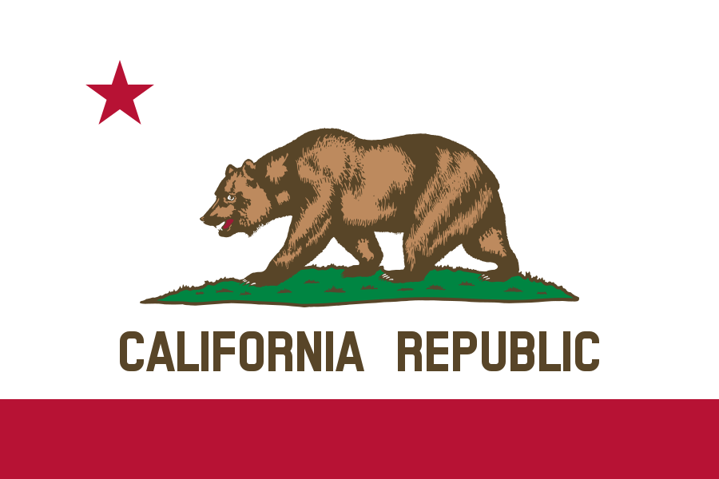
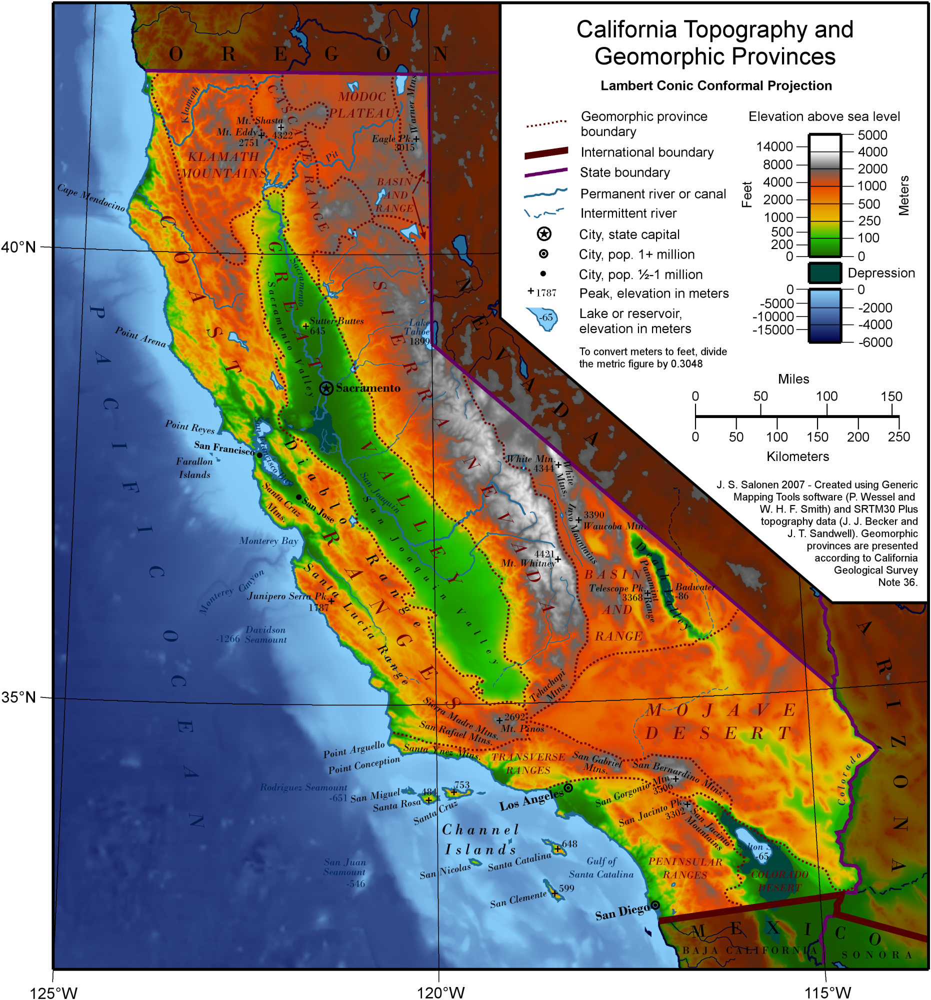
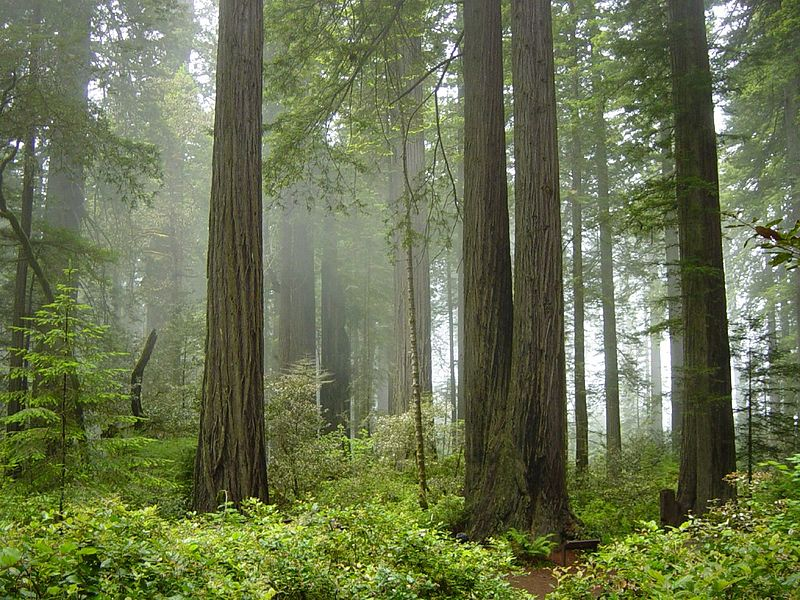
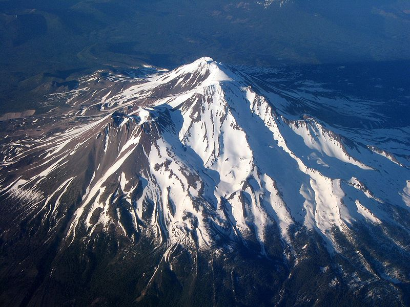

California is the most populous state in the United States and the third most extensive by area. Located on the western (Pacific Ocean) coast of the U.S., California is bordered by Oregon to the north, Nevada, to the east and northeast, Arizona to the southeast and it shares an international border with the Mexican state of Baja California to the south. The state capital is Sacramento. Los Angeles is California's most populous city, and the country's second largest after New York City. The Greater Los Angeles Area and the San Francisco Bay Area are the nation's second- and fifth-most populous urban regions, respectively. California also has the nation's most populous county, Los Angeles County, and its largest county by area, San Bernardino County. California's diverse geography ranges from the Pacific Coast in the west to the Sierra Nevada mountain range in the east; and from the redwood–Douglas fir forests in the northwest to the Mojave Desert in the southeast. The Central Valley, a major agricultural area, dominates the state's center. Though California is well-known for its warm Mediterranean climate, the large size of the state means it can vary from moist temperate rainforest in the north, to arid desert in the interior, as well as snowy alpine in the mountains.
What is now California was first settled by various Native American tribes before being explored by a number of European expeditions during the 16th and 17th centuries. The Spanish Empire then claimed it as part of Alta California in their New Spain colony. The area became a part of Mexico in 1821 following its successful war for independence, but was ceded to the United States in 1848 after the Mexican–American War. The western portion of Alta California then was organized as the State of California, and admitted as the 31st state on September 9, 1850. The California Gold Rush starting in 1848 led to dramatic social and demographic changes, with large-scale emigration from the east and abroad with an accompanying economic boom. If it were a country, California would be the 6th largest economy in the world[14] and the 35th most populous. It is also regarded as a global trendsetter in both popular culture and politics, and is the origin of the film industry, the hippie counterculture, the Internet, and the personal computer, among others. Fifty-eight percent of the state's economy is centered on finance, government, real estate services, technology, and professional, scientific and technical business services.The San Francisco Bay Area has the nation's highest median household income by metropolitan area, and is the headquarters of three of the world's largest 40 firms by revenue, Chevron, Apple, and McKesson. Although it accounts for only 1.5 percent of the state's economy,California's agriculture industry has the highest output of any U.S. state.The word California originally referred to the Baja California Peninsula of Mexico; it was later extended to the entire region composed of the current United States states of California, Nevada, and Utah, and parts of Arizona, New Mexico, Texas and Wyoming.
The name California is surmised by some writers to have derived from a fictional paradise peopled by Black Amazons and ruled by Queen Calafia, who fought alongside Muslims and whose name was chosen to echo the title of a Muslim leader, the Caliph, fictionally implying that California was the Caliphate. The story of Calafia is recorded in a 1510 work The Adventures of Esplandián, written as a sequel to Amadis de Gaula by Spanish adventure writer Garci Rodríguez de Montalvo. The kingdom of Queen Calafia, according to Montalvo, was said to be a remote land inhabited by griffins and other strange beasts, and rich in gold.
California is the 3rd largest state in the United States in area, after Alaska and Texas.[65] California is often geographically bisected into two regions, Southern California, comprising the 10 southernmost counties, and Northern California, comprising the 48 northernmost counties.
In the middle of the state lies the California Central Valley, bounded by the Sierra Nevada in the east, the coastal mountain ranges in the west, the Cascade Range to the north and by the Tehachapi Mountains in the south. The Central Valley is California's productive agricultural heartland.
Divided in two by the Sacramento-San Joaquin River Delta, the northern portion, the Sacramento Valley serves as the watershed of the Sacramento River, while the southern portion, the San Joaquin Valley is the watershed for the San Joaquin River. Both valleys derive their names from the rivers that flow through them. With dredging, the Sacramento and the San Joaquin Rivers have remained deep enough for several inland cities to be seaports.
The Sacramento-San Joaquin River Delta is a critical water supply hub for the state. Water is diverted from the delta and through an extensive network of pumps and canals that traverse nearly the length of the state, to the Central Valley and the State Water Projects and other needs. Water from the Delta provides drinking water for nearly 23 million people, almost two-thirds of the state's population as well as water for farmers on the west side of the San Joaquin Valley.
The Channel Islands are located off the Southern coast. The Sierra Nevada (Spanish for "snowy range") includes the highest peak in the contiguous 48 states, Mount Whitney, at 14,505 feet (4,421 m).The range embraces Yosemite Valley, famous for its glacially carved domes, and Sequoia National Park, home to the giant sequoia trees, the largest living organisms on Earth, and the deep freshwater lake, Lake Tahoe, the largest lake in the state by volume.
To the east of the Sierra Nevada are Owens Valley and Mono Lake, an essential migratory bird habitat. In the western part of the state is Clear Lake, the largest freshwater lake by area entirely in California. Though Lake Tahoe is larger, it is divided by the California/Nevada border.  The Sierra Nevada falls to Arctic temperatures in winter and has several dozen small glaciers, including Palisade Glacier, the southernmost glacier in the United States.
About 45 percent of the state's total surface area is covered by forests,and California's diversity of pine species is unmatched by any other state. California contains more forestland than any other state except Alaska. Many of the trees in the California White Mountains are the oldest in the world; an individual bristlecone pine is over 5,000 years old.
In the south is a large inland salt lake, the Salton Sea. The south-central desert is called the Mojave; to the northeast of the Mojave lies Death Valley, which contains the lowest and hottest place in North America, the Badwater Basin at −279 feet (−85 m). The horizontal distance from the bottom of Death Valley to the top of Mount Whitney is less than 90 miles (140 km). Indeed, almost all of southeastern California is arid, hot desert, with routine extreme high temperatures during the summer. The southeastern border of California with Arizona is entirely formed by the Colorado River, from which the southern part of the state gets about half of its water.
California contains both the highest point (Mount Whitney) and the lowest point (Death Valley) in the contiguous United States.
A majority of California's cities are located in either the San Francisco Bay Area or the Sacramento metropolitan area in Northern California; or the Los Angeles area, the Riverside-San Bernardino-Inland Empire, or the San Diego metropolitan area in Southern California. The Los Angeles Area, the Bay Area, and the San Diego metropolitan area are among several major metropolitan areas along the California coast.
As part of the Ring of Fire, California is subject to tsunamis, floods, droughts, Santa Ana winds, wildfires, landslides on steep terrain, and has several volcanoes. It has many earthquakes due to several faults running through the state, in particular the San Andreas Fault. About 37,000 earthquakes are recorded each year, but most are too small to be felt.
Although most of the state has a Mediterranean climate, due to the state's large size, the climate ranges from subarctic to subtropical. The cool California Current offshore often creates summer fog near the coast. Farther inland, there are colder winters and hotter summers. The maritime moderation results in the shoreline summertime temperatures of Los Angeles and San Francisco being the coolest of all major metropolitan areas of the United States and uniquely cool compared to areas on the same latitude in the interior and on the east coast of the North American continent. Even the San Diego shoreline bordering Mexico is cooler in summer than most areas in the contiguous United States. Just a few miles inland, summer temperature extremes are significantly higher, with downtown Los Angeles being several degrees warmer than at the coast. The same microclimate phenomenon is seen in the climate of the Bay Area, where areas sheltered from the sea experience significantly hotter summers than nearby areas that are close to the ocean.
Northern parts of the state have more rain than the south. California's mountain ranges also influence the climate: some of the rainiest parts of the state are west-facing mountain slopes. Northwestern California has a temperate climate, and the Central Valley has a Mediterranean climate but with greater temperature extremes than the coast. The high mountains, including the Sierra Nevada, have an alpine climate with snow in winter and mild to moderate heat in summer.
California's mountains produce rain shadows on the eastern side, creating extensive deserts. The higher elevation deserts of eastern California have hot summers and cold winters, while the low deserts east of the Southern California mountains have hot summers and nearly frostless mild winters. Death Valley, a desert with large expanses below sea level, is considered the hottest location in the world; the highest temperature in the world, 134 °F (56.7 °C), was recorded there on July 10, 1913. The lowest temperature in California was −45 °F (−43 °C) in 1937 in Boca.
The table below lists average temperatures for August and December in a selection of places throughout the state; some highly populated and some not. This includes the relatively cool summers of the Humboldt Bay region around Eureka, the extreme heat of Death Valley, and the mountain climate of Mammoth in the Sierra Nevadas.
{kind=link}
{kind=link}
{kind=link}
{kind=link}